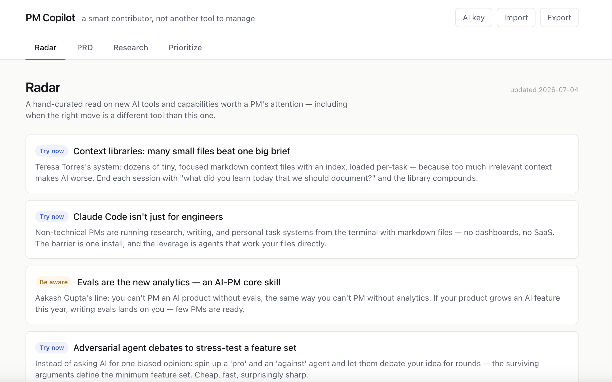
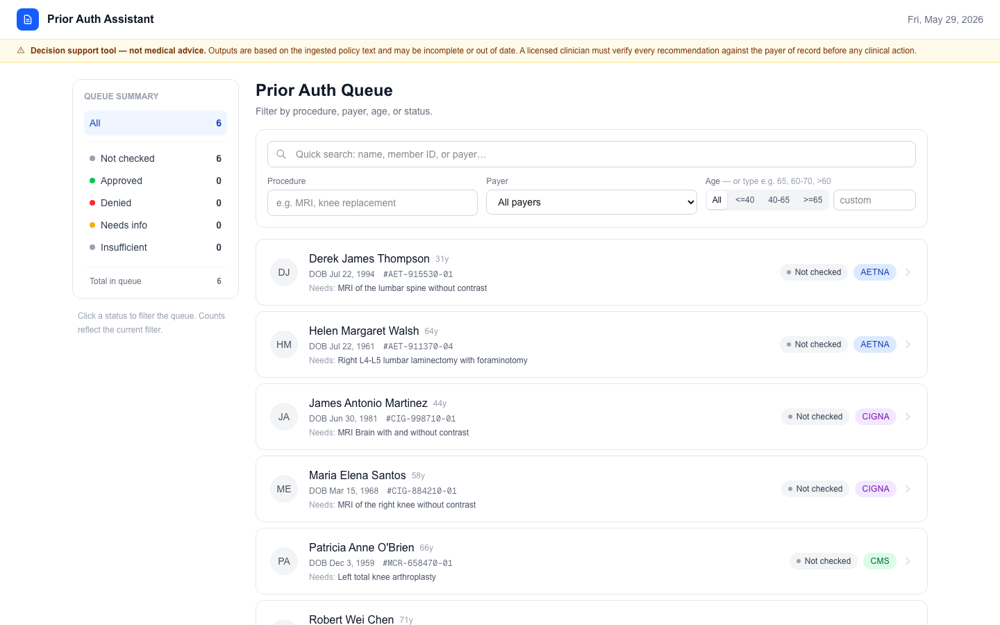
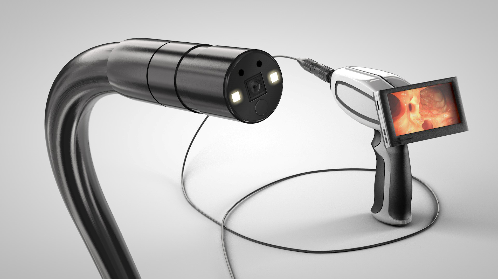

PM CopilotPersonal Project · AI · LLM App
AI Copilot — Serverless LLM App, Built in a Week
I designed and shipped a full LLM-powered web app in one week, spec-first, with every engineering decision documented as an ADR. The architecture is deliberately serverless: bring-your-own-API-key with live web-searched research through the Claude API, or a zero-setup prompt-copy fallback. No accounts, no stored data.
The centerpiece is an AI agent running a curation methodology I wrote as a reusable skill, maintaining a weekly feed automatically. Built in React/TypeScript with prompt engineering and agent workflows throughout — the scope cuts are documented as engineering decisions, not omissions. (The domain it happens to serve is product tooling, but the interesting part is the build.)
The centerpiece is an AI agent running a curation methodology I wrote as a reusable skill, maintaining a weekly feed automatically. Built in React/TypeScript with prompt engineering and agent workflows throughout — the scope cuts are documented as engineering decisions, not omissions. (The domain it happens to serve is product tooling, but the interesting part is the build.)
Shipped in one week: live app, an auto-updating agent feed, and a public decision record from first commit to deploy.
React/TypeScript · Claude API · Agent workflows · Serverless architecture · Prompt engineering · Spec-first development · ADRs
Live app — try it →
Source, ADRs & playbook on GitHub →

Prior Authorization AssistantPersonal Project · AI/RAG · Healthcare
Prior Authorization Assistant — RAG from Scratch
I built an end-to-end RAG (retrieval-augmented generation) system from scratch — no LangChain, no third-party vector database — to help a clinical reviewer decide whether a patient meets the coverage criteria for a procedure under their insurance policy. Stack: FastAPI + Next.js 16 + Mistral, with a custom BM25 index, a NumPy vector store, and a hybrid retriever I empirically calibrated against 32 hand-crafted golden queries and 83 synthetic QA pairs.
The system has an active UI: a nurse opens a worklist, picks a patient, hits "Analyze," and within seconds gets a structured verdict — APPROVED, DENIED, NEEDS_MORE_INFO, or INSUFFICIENT_EVIDENCE — with inline citations into the source documents. I built clinical-safety guardrails throughout: an intent classifier short-circuits unsafe or off-topic prompts before generation, similarity and version filters drop weak retrievals, and the INSUFFICIENT_EVIDENCE fallback ensures the system never fabricates on weak evidence.
The system has an active UI: a nurse opens a worklist, picks a patient, hits "Analyze," and within seconds gets a structured verdict — APPROVED, DENIED, NEEDS_MORE_INFO, or INSUFFICIENT_EVIDENCE — with inline citations into the source documents. I built clinical-safety guardrails throughout: an intent classifier short-circuits unsafe or off-topic prompts before generation, similarity and version filters drop weak retrievals, and the INSUFFICIENT_EVIDENCE fallback ensures the system never fabricates on weak evidence.
5/5 verdicts correct on an adversarial test set. 251 hermetic tests run in ~20 seconds.
RAG · LLM APIs (Mistral) · Hybrid retrieval (BM25 + semantic) · FastAPI · Next.js · Healthcare AI · Guardrails design
Live UI — try it →
Source code on GitHub →

GI View · Regulatory · Systems
Colonoscopy Device — FDA Approval
Taking full ownership of a complex system means holding all of it — not just the piece assigned to you. I owned this device end to end across optics, firmware, and calibration, while simultaneously managing the camera supplier relationship and keeping three FDA programs aligned.
Getting the supplier from unresponsive to weekly in-person collaboration required showing up as a technical peer, not a customer. The device passed FDA approval within approximately one month.
Getting the supplier from unresponsive to weekly in-person collaboration required showing up as a technical peer, not a customer. The device passed FDA approval within approximately one month.
Passed FDA approval in approximately one month.
Full ownership · Vendor management · Cross-functional delivery · FDA compliance

GI View · Product Development · 0→1
Gastroscopy Device — Building from Zero
New product, new clinical use case, nothing inherited. I led the full 0→1 — from physician discovery research through technology decisions, specifications, component sourcing, and vendor management. Spent time in procedure rooms observing clinical workflows across competing devices before making any technical decisions.
The technology direction I chose was justified not just on engineering merit, but on regulatory strategy: the faster, more predictable FDA pathway was a product decision as much as a technical one.
The technology direction I chose was justified not just on engineering merit, but on regulatory strategy: the faster, more predictable FDA pathway was a product decision as much as a technical one.
Full technical and regulatory architecture established from first principles.
0→1 product development · Clinical discovery · Technology decisions · Regulatory strategy

Tel Aviv University · Leadership
TAU MedTech Hackathon — Healthcare Innovation Ecosystem
Translating real clinical problems into challenges engineers can actually solve takes systems thinking. I co-organized a healthcare innovation competition — 18 teams, ~200 participants, sponsored by Amazon, Google, Microsoft, Philips, Teva, and IBM — and that translation was the core of the work.
Established partnerships with major medical institutions, structured unmet clinical needs into actionable engineering briefs, and negotiated data access agreements. Built the infrastructure for a cross-institutional ecosystem from scratch. The same initiative continues today as Synergy Innovate (formerly TAU MedTech), Tel Aviv University's medical entrepreneurship center.
Established partnerships with major medical institutions, structured unmet clinical needs into actionable engineering briefs, and negotiated data access agreements. Built the infrastructure for a cross-institutional ecosystem from scratch. The same initiative continues today as Synergy Innovate (formerly TAU MedTech), Tel Aviv University's medical entrepreneurship center.
Built a cross-institutional healthcare innovation ecosystem from scratch.
Ecosystem building · Clinical translation · Strategic partnerships · Event leadership
Synergy Innovate — organization site →

Northeastern · MS Bioengineering · Regulatory
Hazard Hue — Disposable Glove With Puncture-Indicating Color Change
Hazard Hue is a concept for a disposable medical glove engineered to provide an immediate visual cue when the barrier is breached—reducing needlestick and contamination uncertainty in high-risk procedural settings. Translating that idea into something a regulator can evaluate means design inputs, risk management, verification thinking, and market-access planning in one coherent thread.
Our team produced a full design-plan–style package: device description, design and development overview, design inputs and outputs, linked risk management and V&V, manufacturing and quality strategy, and multi-region regulatory submission paths (EU MDR including country specifics, US, UK, Brazil, Turkey, and post-market surveillance). Supporting material includes GSPR-style mappings, verification procedure scaffolding, and DHF-oriented structure—all as an academic regulatory-systems exercise for a novel safety-oriented barrier device concept.
Our team produced a full design-plan–style package: device description, design and development overview, design inputs and outputs, linked risk management and V&V, manufacturing and quality strategy, and multi-region regulatory submission paths (EU MDR including country specifics, US, UK, Brazil, Turkey, and post-market surveillance). Supporting material includes GSPR-style mappings, verification procedure scaffolding, and DHF-oriented structure—all as an academic regulatory-systems exercise for a novel safety-oriented barrier device concept.
End-to-end design and regulatory documentation framework for a novel safety-oriented wearable.
Design controls · ISO 14971 · MDR / FDA pathways · DHF · Team delivery
Full regulatory & design document (DOCX) →
Project presentation (PPTX) →